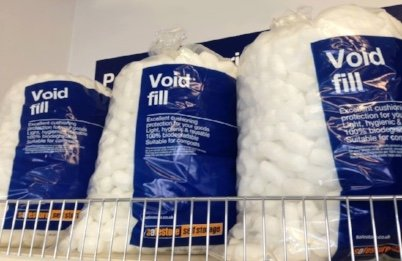

Nothingness. The supposed goal of every enlightenment seeker.
Everyone knows we gotta get ourselves into the void somehow. We need to see through self, empty the mind of thoughts, die to the ego, and experience the disappearance of everything we know and love.
OK!
But...
Let’s get real- that's kind of terrifying.
We hate that nothingness thing.
We far prefer something. We like filled up, not empty. We like to have something. We like to get something. We like extra, lots, plenty, more.
We are really not interested in not-enough, emptiness, void. That all means lack.
No one wants that.
Perhaps this is partly why, at the same time we're supposedly trying to attain enlightenment, we're also spending countless hours looking for ways to be more- more complete, more enough, more calm, more healthy. We think- a lot- about how to get rid of thought, while conveniently filling empty space with more thought.
Being less, being nothing, “killing off” the Me- in our minds those enlightenment requirements equal deprivation, nullification, destruction.
Nooooo thank you.
Yeah, better to have fear, anger, sadness, which may not be fun but are at least better than emptiness and death.
We can fill up on intensity. Nothingness just leaves us hungry.
Meanwhile, here we are right now talking about emptiness like it’s some thing.
Nope.
And maybe that's part of what we've been failing to notice.
Because thoughts are nothing and we’re used to those. The “inner world” is nothing and we’re used to that. Feelings are empty and we’re used to that.
Emptiness is actually just business as usual. We’re already experiencing it all the time.
We're used to it. We’re already nothing.
And we’re fine.
Stories of Me continue just fine.
Void or no void.
Besides, there’s actually no need to be afraid of nothingness.
First of all, because it's nothing.
And second, because there can’t be something without nothing to contain it. In fact there can’t be anything without nothing.
Space contains the whole universe. That includes galaxies and black holes and egos and stories and personalities and crazy thoughts.
Empty space holds all the somethings. Including all that stuff we want more of. Including us.
Turns out we can live and survive only within the void.
So the existence we’re so afraid of losing actually can’t happen at all without emptiness.
The void means birth, existence, experience, everythingness.
Which is the opposite of death.
Nothingness is enormously, incomprehensibly, full rather than empty.
It's a fullness that can’t be used up, harmed, disappeared, or killed off.
We can't die to that.
Talk about complete.
Talk about safe, full, and more than enough.
It's the ultimate in everythingness.
Including surrender, relief and gratitude.
Now that's spacious.
Fall on in.
- - - - -
Noooo, not the Void!!
